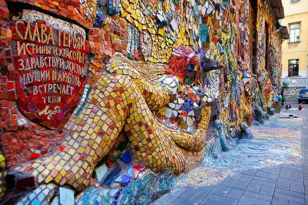

Мозаичный дворик на Фонтанке – часть Музея под открытым небом, созданного художником Владимиром Лубенко и его учениками. Его посещение не входит в городские экскурсионные программы, но туристам, оказавшимся рядом, стоит заглянуть в удивительное пространство и оценить яркие объекты, оформленные мозаикой.
Основатель и руководитель академии - Владимир Лубенко, имеющий титул Заслуженного художника России. Набрав первую группу учеников, он предложил им принять участие в необычном проекте и украсить двор дома, в котором располагалась Академия. Дети согласились, и работа началась.Через некоторое время двор превратился в сказочное мозаичное пространство с оригинальными барельефами и яркими скульптурами. Творческая группа под руководством Владимира Васильевича декорировала цветными стеклышками даже поребрики и стены здания.